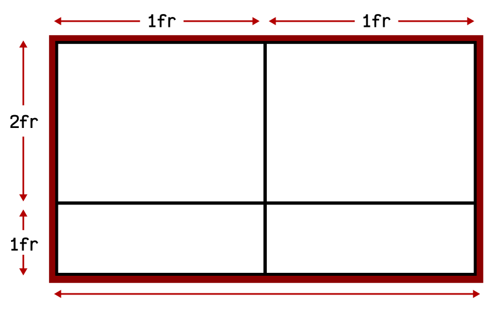

CSS Grid Layout
CSS Grid layout contiene funciones de diseño dirigidas a los desarrolladores de aplicaciones web. El CSS grid se puede utilizar para lograr muchos diseños diferentes. También se destaca por permitir dividir una página en áreas o regiones principales, por definir la relación en términos de tamaño, posición y capas entre partes de un control construido a partir de primitivas HTML.
Grid CSS nace de esa necesidad, y recoge las ventajas de ese sistema, añadiendole numerosas mejoras y características que permiten crear rápidamente cuadrículas sencillas y potentes de forma prácticamente instantánea.
Conceptos
Para utilizar Grid CSS necesitaremos tener en cuenta una serie de conceptos que utilizaremos a partir de ahora y que definiremos a continuación:
- Contenedor : El elemento padre contenedor que definirá la cuadrícula o rejilla.
- Item : Cada uno de los hijos que contiene la cuadrícula (elemento contenedor).
- Celda(grid cell) : Cada uno de los cuadritos (unidad mínima) de la cuadrícula.
- Area(grid area): Región o conjunto de celdas de la cuadrícula.
- Banda(grid track): Banda horizontal o vertical de celdas de la cuadrícula.
- Linea(grid line): Separador horizontal o vertical de las celdas de la cuadrícula.
Para entender algunos conceptos supongamos que tenemos la siguiente linea de codigo
Para activar la cuadrícula grid hay que utilizar sobre el elemento contenedor la propiedad display y especificar el valor grid o inline-grid.
- inline-grid:Establece una cuadrícula con ítems en línea, de forma equivalente a inline-block.
- grid:Establece una cuadrícula con ítems en bloque, de forma equivalente a block.
Este valor influye en como se comportará la cuadrícula con el contenido exterior. El primero de ellos permite que la cuadrícula aparezca encima/debajo del contenido exterior (en bloque) y el segundo de ellos permite que la cuadrícula aparezca a la izquierda/derecha (en línea) del contenido exterior
Una vez elegido uno de estos dos valores, y establecida la propiedad display al elemento contenedor, hay varias formas de configurar nuestra cuadrícula grid. Comencemos con las propiedades que se aplican al elemento contenedor (padre).
Grid con filas y columnas
Es posible crear cuadrículas con un tamaño explícito. Para ello, sólo tenemos que usar las propiedades CSS grid-template-columns y grid-template-rows, que sirven para indicar las dimensiones de cada celda de la cuadrícula, diferenciando entre columnas y filas. Las propiedades son las siguientes:
Teniendo en cuenta el cuadro de arriba, creamos el sig CSS
Esto significa que tendremos una cuadricula con 2 columnas (la primera con 50px de ancho y la segunda con 300px de ancho) y con 2 filas (la primera con 200px de alto y la segunda con 75px de alto). Ahora, dependiendo del número de ítems (elementos hijos) que tenga el contenedor grid, tendremos una cuadrícula de 2x2 elementos (4 ítems), 2x3 elementos (6 ítems), 2x4 elementos (8 ítems) y así sucesivamente. Si el número de ítems es impar, la última celda de la cuadrícula se quedará vacía.

A medida que fueramos incluyendo más ítems en el grid, podríamos aumentar también el número de parámetros de grid-template-columns y/o grid-template-rows. Ten en cuenta que en este caso, tenemos dos valores en cada propiedad (2x2), lo que hacen una cuadrícula de 4 elementos, que es justo el número de ítems en el HTML
En caso de tener más ítems de lo que se indica en la propiedad, los ítems restantes se incluirían sin formato. De tener menos, simplemente se ocuparían los ítems implicados.
Unidad fracción restante (fr)
Anteriormente se uso la medida pixel como unidades de las celdas de la cuadrícula, sin embargo, también podemos utilizar otras unidades (o incluso combinarlas) como porcentajes, la palabra clave auto (que obtiene el tamaño restante) o la unidad especial de Grid CSS fr (fraction), que simboliza una fracción de espacio restante en el grid.
Veamos un código de ejemplo en acción:
Este nuevo ejemplo, se crea una cuadrícula de 2x2, donde el tamaño de ancho de la cuadrícula se divide en dos columnas (mismo tamaño de ancho para cada una), y el tamaño de alto de la cuadrícula se divide en dos filas, donde la primera ocupará el doble (2 fr) que la segunda (1 fr):
De esta forma, podemos tener un mejor control del espacio restante de la cuadrícula, y como utilizarlo.
Se pueden combinar varias unidades diferentes, pudiendo utilizar píxeles (px) y fracciones restantes (fr), porcentajes (%) y fracciones restantes (fr) o combinaciónes similares.
Se pueden combinar varias unidades diferentes, pudiendo utilizar píxeles (px) y fracciones restantes (fr), porcentajes (%) y fracciones restantes (fr) o combinaciónes similares.
Filas y columnas repetitivas
En caso de que tengamos que las propiedades grid-template-columns y grid-template-rows tengan los mismo valores podemos ahorrar tiempo usando la expresión repeat() para indicar repetición de valores, indicando el número de veces que se repiten y el tamaño en cuestión.
La expresión a utilizar sería la siguiente: repeat([núm de veces], [valor o valores]):
Asumiendo que tuvieramos un contenedor grid con 8 ítems hijos (o más), el ejemplo anterior crearía una cuadrícula con 4 columnas (la primera de 100px de ancho, la segunda y tercera de 50px de ancho y la cuarta de 200px de ancho). Por otro lado, tendría 2 filas (la primera de 50px de alto, y la segunda de 100px de alto). En el caso de tener más ítems hijos, el patrón se seguiría repitiendo.
El ejemplo anterior seria equivalente a
Grid con líneas nombradas
Con Grid CSS también tenemos la posibilidad de usar «linenames», o lo que es lo mismo, ponerle nombre a las líneas de nuestro sistema grid. Vamos a verlo con un ejemplo, donde probablemente se vea mucho mejor. Partamos de esta estructura HTML:
Los nombres de las clases ya dan una idea del contenido que tendrán. Ahora, mediante Grid CSS lo que haremos es darle una estructura definida. Para ello, vamos a considerar los siguientes nombres para las lineas de nuestro grid, utilizando X para las posiciones en el eje X y utilizando Y para las posiciones en el eje Y:

Teniendo esto en cuenta, lo único que tenemos que hacer es indicar estos nombres entre corchetes, justo antes de la medida que establecimos como vimos en apartados anteriores. Obsérvese que también se coloca una nombre de línea final sin medida a continuación, que representa la línea final:
En este caso, los nombres utilizados son tan sólo un ejemplo didáctico. Si se considera más adecuado, se podrían utilizar otros nombres quizás más amigables como top-line, top-medium-line, bottom-medium-line y bottom-line, por ejemplo, en lugar de y0, y1, y2 y y3 respectivamente.
Ahora, teniendo los nombres, sólo quedaría delimitar que zonas del grid queremos que ocupe cada uno de nuestros bloques del grid. Para ello utilizaremos las propiedades grid-column-start, grid-column-end y grid-row-start, grid-row-end. También podriamos utilizar sus propiedades de atajo grid-column y grid-row.
El resultado final quedaria algo asi:
Usando grid con Bootstrap
Ahora bien, un ejemplo implementar grid usando la herramienta Bootstrap, pero antes ¿Qué es Bootstrap?
Bootstrap
Bootstrap es un framework CSS desarrollado por Twitter en 2010, para estandarizar las herramientas de la compañía.
Inicialmente, se llamó Twitter Blueprint y, un poco más tarde, en 2011, se transformó en código abierto y su nombre cambió para Bootstrap. Desde entonces fue actualizado varias veces y ya se encuentra en la versión 5.
El framework combina CSS y JavaScript para estilizar los elementos de una página HTML. Permite mucho más que, simplemente, cambiar el color de los botones y los enlaces.
Esta es una herramienta que proporciona interactividad en la página, por lo que ofrece una serie de componentes que facilitan la comunicación con el usuario, como menús de navegación, controles de página, barras de progreso y más.
Ahora que sabemos mas o menos que es Bootstrap, vamos a implementarlo en una galeria de fotos.
Galeria